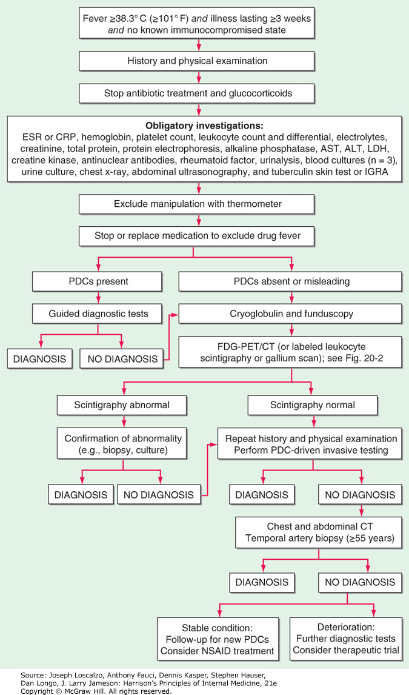

Fever¶
source: Harrison's Principles of Internal Medicine, 21e
正常體溫¶
- 體溫由下視丘控制
- 根據一項對35,000多名年齡≥18歲的個體進行的例行醫療訪問研究，平均口腔溫度為36.6°C（95%置信區間為35.7-37.3°C）。根據這項研究，健康個體99%百分位數的體溫定義為發燒，即超過37.7°C（99.9°F）
- 體溫具有晝夜和季節變化，早上8點和夏季時最低，而下午4點和冬季時最高
- 肛溫通常比口腔溫度高0.4°C（0.7°F）
- 在育齡女性中，排卵前兩週的早晨體溫通常較低；排卵時體溫上升約0.6°C（1°F），並保持至月經來
發燒¶
- 發燒是體溫超過正常日常變化範圍，並伴隨下視丘設定點上升（例如，從37°C上升到39°C）而發生的現象
- 超過41.5°C（106.7°F）的發燒稱為高熱（hyperpyrexia）。這種極高的發燒可能出現在患有嚴重感染的患者中，但最常見於中樞神經系統（CNS）出血的患者
熱衰竭¶
- 雖然大多數體溫升高的患者是發燒，但有些情況下，體溫升高並非由於發燒，而是由於熱衰竭（熱中暑）。熱衰竭的特徵是體溫不受控制地上升，超過了身體散熱的能力。此時，下視丘體溫調節中心的設定未變化。
- 熱衰竭通常根據核心體溫升高前的事件來診斷——例如，熱暴露或使用干擾體溫調節的藥物。在熱中暑綜合症患者和那些服用阻止出汗藥物的患者中，皮膚會變熱但乾燥，而在發燒時，由於血管收縮，皮膚可能會感到寒冷。退燒藥不會降低熱衰竭引起的體溫，而在發燒——甚至高熱中，適量的阿司匹林或acetaminophen通常會導致體溫有所下降。
處置¶
- 使用電子設備測量口腔、鼓膜或直腸溫度是可靠的，但應該持續使用同一個部位來監測發熱狀況
- 對於低度發燒或懷疑隱匿性疾病的患者，最有價值的測量是C反應蛋白（CRP）和紅血球沉降率（ESR）
治療方案¶
- 用常規的退燒藥治療發燒及其症狀既無害，也不會延緩常見病毒和細菌感染的痊癒
- 在細菌感染中，停止使用退燒藥可以幫助評估特定抗生素的有效性，特別是在沒有致病菌的陽性培養結果的情況下，常規使用退燒藥可能會掩蓋治療不足的細菌感染
- 治療發燒的目標是首先降低升高的下視丘設定點，其次促進散熱。用退燒藥降低發燒還能減少頭痛、肌肉疼痛和關節疼痛等全身症狀。
- 口服aspirin和NSAIDs有效地降低發燒，但可能對血小板和消化道產生不良影響。因此，acetaminophen作為退燒藥更受推薦。
- 在兒童中，必須使用acetaminophen或口服ibuprofen，因為aspirin會增加Reye綜合症的風險。如果患者無法服用口服退燒藥，可以使用靜脈注射的NSAIDs和各種退燒藥的直腸栓劑。
- 在某些患者中，發燒的治療是高度建議的。發燒增加了氧氣需求（即每升高1°C，氧氣消耗增加13%），並可能加劇已有==心臟、肺部或中樞神經系統功能損害的患者的病情。對於有發燒或非發燒性癲癇病史的兒童==應積極治療以降低發燒。然而，目前尚不清楚引發發燒性癲癇的具體原因，且在易感兒童中，發燒性癲癇的發作與體溫的絕對升高之間沒有相關性。
- 在高熱症中，使用降溫毯有助於降低體溫；然而，不應在沒有口服退燒藥的情況下使用降溫毯。在有中樞神經系統疾病或創傷（中樞神經系統出血）的高熱患者中，降低核心體溫可以減少高溫對大腦的有害影響。
Relative Bradycardia¶
- Definition: For every 1°C (1.8°F) increase in core temperature, the heart rate typically rises by 15–20 beats/min.
| Causes of Relative Bradycardia | |
|---|---|
| Gram-negative bacteria | Salmonella typhi Francisella tularensis Brucella spp. Coxiella burnetii (Q fever) Leptospira interrogans Legionella pneumophila Mycoplasma pneumoniae |
| Tick-borne organisms | Rickettsia spp. Orientia tsutsugamushi (scrub typhus) Babesia spp. |
| Other intracellular organisms | Corynebacterium diphtheriae Plasmodium spp. (malaria) |
| Viruses/viral infections | Yellow fever virus Dengue virus Viral hemorrhagic feversa Viral myocarditis |
| Noninfectious Causes | Drug fever Beta blocker use Central nervous system lesions Malignant lymphoma Factitious fever |
| ## 特殊模式的發燒 |
- 某些感染有特殊模式，其中發燒期與正常體溫期交替。例如，惡性瘧疾（Plasmodium vivax）每三天發燒一次，而四日瘧疾（Plasmodium malariae）每四天發燒一次。
- 另一種復發性發燒與伯氏疏螺旋體感染相關，發燒幾天後伴有幾天的無發燒期，隨後再次發燒。
- 在Pel-Ebstein模式中，發燒持續3-10天，隨後無發燒期為3-10天；這種模式可以是何杰金淋巴瘤和其他淋巴瘤的典型特徵。
- 在循環性嗜中性球低下症中，發燒每21天發作一次，並伴有嗜中性球低下。
- 還有一些周期性發燒症候群（例如家族性地中海熱、TNF受體相關周期性綜合症[TRAPS]），這些症候群在周期性、發作持續時間、臨床特徵組合、遺傳原因和治療上有所不同
FUO¶
1961年，Petersdorf 和 Beeson 最初將不明原因發熱（FUO）定義為病程超過3週、至少兩次發燒（≥38.3°C或≥101°F），並且在住院1週的評估後仍未確診。如今，大多數 FUO 患者只有在臨床情況需要時才會住院，而非僅為了診斷目的；因此，住院評估要求已從定義中取消。此外，FUO 的定義進一步排除了免疫不全患者，因為這些患者的診斷和治療方法完全不同。為了最佳地比較不同地區的 FUO 患者，有人建議將定量標準（經過1週評估後診斷仍不確定）更改為需要進行特定檢查的定性標準。因此，FUO 現在的定義如下：
- 至少兩次體溫達到或超過38.3°C（101°F）
- 疾病持續時間達到或超過3週
- 無已知的免疫不全狀態
- 經過徹底的病史詢問、理學檢查以及以下必需檢查後，診斷仍然不明：
erythrocyte sedimentation rate (ESR) and C-reactive protein (CRP) level; platelet count; leukocyte count and differential; measurement of levels of hemoglobin, electrolytes, creatinine, total protein, alkaline phosphatase, alanine aminotransferase, aspartate aminotransferase, lactate dehydrogenase, creatine kinase, ferritin, antinuclear antibodies, and rheumatoid factor; protein electrophoresis; urinalysis; blood cultures (n = 3); urine culture; chest x-ray; abdominal ultrasonography; and tuberculin skin test (TST) or interferon γ release assay (IGRA)
Structured approach to patients with FUO¶
